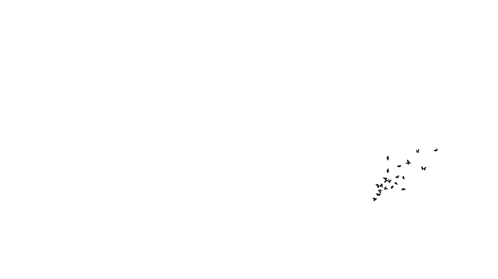
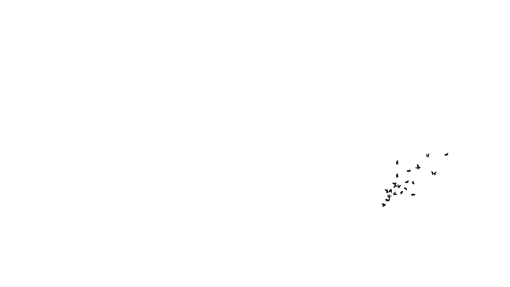
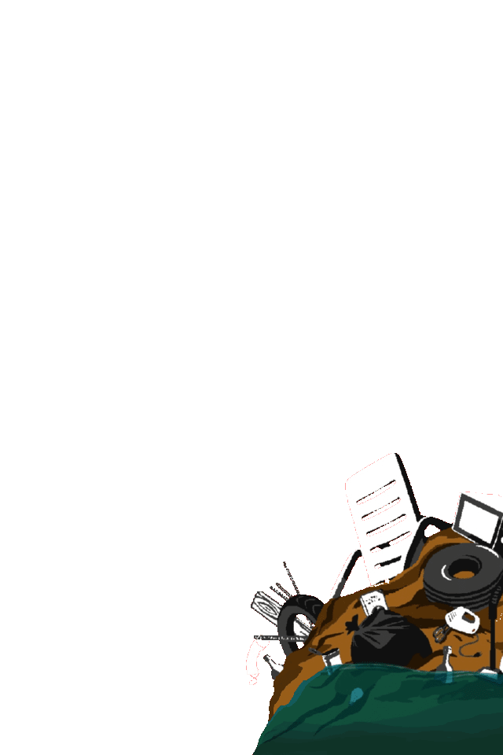
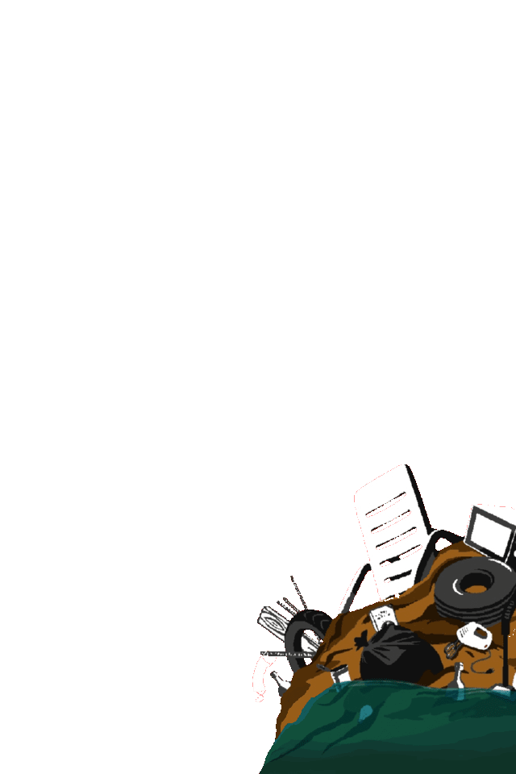

Les Insurgés
des déchets


 



Les Insurgés
des déchets


 

Composition du conseil d'administration de l’association
Delphine Basset
Présidente

Raphaël Couillaud
Vice-président

Laurence Guillaume
Trésorière

Laure Collignon
Secrétaire

Sabine Mallet
Secrétaire adjointe
carnetdemimi
Membre du C.A.
Nos Insurgés des déchets...
Ils s'appellent Math, Dolores, Denis, Yvette, Arnaud, Frank, Rachel, Fabrice, Nicole A, Jean-Guy, Patricia P, Lionel, Rodolphe, Jannick R, Annik, Nathalie B, Dolly, Monique T, Cécile, Célia, Alain, Karine, Éric P, Guy, Marie-Bernard, Vanessa, Marion, Marie-Marthe, Serge, Rémy, Rémi, Françoise, Philippe, Lola R, Wolci, Patricia S, Viviane, Catherine M, Maria, Pascal C, Patricia V, Dominique, Éric D, Sébastien, Caroline, Céline, Thérèse, Noémie, Pauline, Anaée, Anaëlle, Ambre, Eléonore, Lola F, Noah, Geneviève, Nicole P, Catherine F, Monique C, Sylvie, Aline, Christophe, Laure, Florence, Amaury, Jannick D, Emma, Djamilla, Léon, Nathalie R, Marie-Laure, Sophie, Annie, Étienne, Marie-Christine, Marcel, Pascal M, Manu, Patrick...
üöß PARTIE...En construction...üë∑
Nos sources d'inspiration et d'espoir...
sont de vrais personnages avec qui nous collaborons et partageons les mêmes valeurs. Régulièrement, nous vous ferons découvrir ces authentiques héros du quotidien.

Carnet de Mimi, la trashion queen
Ce n’est pas une démarche artistique ou de recyclage, mais une provocation. Depuis un an, Mimi ramasse les masques chirurgicaux jetés au sol, dans la rue ou dans la nature, et les coud pour en faire des robes, débardeurs, sacs, chapeaux, culottes… Une façon pour elle de dénoncer et d’éveiller les consciences sur ces déchets.
Alors confinée à Chamonix, la Lilloise a été « carrément choquée de voir tous ces trucs par terre, j’ai cru que c’était une blague ! ».
Mimi a un caractère bien trempé et des convictions affirmées, forgées par un parcours atypique. Ancienne clerc de notaire, elle a tout plaqué « lassée de cette vie qui n’avait pas vraiment de sens ». Elle a alors fait du « woofing », du travail dans des fermes, a voyagé en France. Elle a aussi eu l’occasion de voyager en Thaïlande où elle a été confrontée de plein fouet à la problématique des déchets. « En nageant sous l’eau là-bas, j’ai vu tous les déchets plastiques dégueulasses partout. J’ai ramassé mes premiers déchets sur la plage ». Mimi est très active sur les réseaux sociaux pour capter notamment l'attention de la jeune génération. Vous pouvez la suivre sur son compte instagram @carnetdemimi
*Par Par Julien Bouteiller pour Lille actu.
Depuis, Mimi s'est installée en Charente-Maritime et a adopté un mode de vie en adéquation avec ses convictions : elle limite au maximum ses déchets, change ses habitudes de consommation… La jeune femme pointe « une société qui est malade, qui fonce vers la catastrophe collective. On est dans un monde du non-sens ». Et pour elle, ces masques jetés par terre sont « l’incarnation de ce non-sens ». Rassurez-vous d’ailleurs, avant de les coudre et de les porter, elle nettoie soigneusement les masques.
Une interpellation qui marche. Mimi a ainsi défilé récemment à Dunkerque puis à Paris lors de la fashion week pour présenter sa « collection » de prêt-à-porter.
Elle alerte aussi sur les réseaux sociaux et prévoit d’enrichir son dressing d’une robe de mariée faite en masques usagés. Toujours plus loin dans une forme d’absurde. « Je ne suis pas une grande tarée. Les fous, ce sont les autres, ceux qui niquent tout alors qu’on parle de collectif et qu’on est en plein dans l’urgence climatique». Au printemps 2022, Mimi fera l'objet d'un portrait de la série Ordinaire orchestrée par le réalisateur Jérémi Stadler.
Véritable électron libre, Mimi s'est engagée à de nombreuses reprises auprès de notre association dont elle est ambassadrice et membre du conseil d'administration.
Edmund Platt, alias l’Escargot Anglais
Partir à l’aventure en parcourant à pied la France tout en ramassant des déchets, voilà le défi que s’est lancé Eddie Platt ou «L’escargot anglais», comme il aime se surnommer. *Inciter les gens à ramasser des déchets, consommer moins, dire stop aux industriels du plastique, tout en restant «punk, jeune, fun et simple»: c’est sa façon de faire. Eddie est ramasseur de déchets et fondateur de l’association 1 déchet par jour (1 piece of rubbish).

*Eddie est devenu un adepte des aventures pour sensibiliser la population. En 2017, il a parcouru 8️⃣0️⃣0️⃣0️⃣ km en auto-stop à travers la France pour ramasser des déchets. L’association 1 déchet par jour incite les gens à se prendre en photo sur les réseaux sociaux en train de ramasser un déchet. Originaire de Leeds, mais Français dans l’âme, Platt ne craint pas de donner des leçons en matière de pollution. Lui-même ancien fumeur, il confesse avoir «jeté 10. 000 mégots par terre, facile.». Il est désormais là pour donner des faits, face aux industriels et au marketing qui nous pousse à la consommation. C’est dans cette démarche de réduction de la consommation, pour faire prendre conscience que chaque citoyen peut faire un geste pour la planète, qu’Eddie, est reparti à l’aventure, cette fois-ci accompagné du «sanglier marseillais», son ami «encore plus fou».
*Par Daphné Chazalon pour Sputnik France.
Pourquoi cet ancien commercial et prof d’anglais devenu frontline militant-nettoyeur, conférencier et écrivain a parcouru 8000 km le pouce levé pour ramasser les déchets que 1 Français sur 3 jette toujours de sa voiture ? Pourquoi cette envie de dénoncer notre monde de surconsommation, les emballages et leurs lobbyistes, les plastiques à usage unique et l’urgence de ramasser au moins 1 déchet par jour everyday et de consommer moins ?
Le réponses à ces interrogations, en lisant son livre disponible via ce lien:
Laurent Gautier de l'association K Net Partage
Laurent GAUTIER est né en 1964 en Région Parisienne. Très vite diagnostiqué comme fort myope, il a passé une bonne partie de son enfance et de sa scolarité dans le flou le plus total. Puis, comme beaucoup de petits garçons et de petites filles, il a simplement porté des lunettes et est sorti du brouillard. Ensuite il a amélioré son confort vers 20 ans, comme tellement d’autres jeunes hommes, en passant aux lentilles de contact. Pendant un peu plus d’une dizaine d’années, il a vécu un rêve éveillé, avec une hygiène parfaite lui permettant d’utiliser ses lentilles, de voir plus clair pour profiter de voyages, de magnifiques paysages et de nombreuses activités professionnelles.
Mais en 1993, au moment de sa mutation dans le Gard, tout a été bouleversé. Il s’est mis à souffrir de kératites à répétition. La kératite est une maladie inflammatoire de la cornée. Elle peut être infectieuse, ou provoquée par une irritation. Malheureusement, les lentilles de contact peuvent en être la cause. Son existence a malgré tout suivi son cours, avec de grands bonheurs, comme la naissance de sa fille, et de petits bémols aussi. En quatre ans, il tombait à 5/10 d’acuité visuelle, pour finir à 0,4 à droite et 2 à gauche avec une correction à - 14. Cependant la kératite était-elle vraiment à mettre en cause ? En réalité, tout jeune qu’il était, sa cécité progressive était imputable à une Dégénérescence Maculaire similaire à la DMLA.
La pression quotidienne au travail était alors bien trop forte, si bien qu’il n’y eut pas d’autre choix que l’arrêt maladie, puis la mise en invalidité. À partir de ce moment-là, une seconde vie commençait pour Laurent. Il avait le temps de s’investir dans toutes les activités qu’il aimait : l’art en devenant plasticien, le sport en pratiquant le karaté d’Okinawa et le kobudo. Il s’engageait aussi dans l’associatif en créant un club de roller-hockey, pour lequel il devenait bénévole, et enfin il s’engageait aussi auprès des écoles de chiens guide d’aveugle. Après avoir été comblé par une seconde naissance, celle de son fils en 2005, il eut une idée vraiment géniale. Avec quelques amis, ils créèrent K Net Partage, afin de prôner une solidarité écologique et responsable, emprunte d’une philosophie tintée de respect et d’humilité. Cette association existe maintenant depuis dix ans.
*Par Sébastien JOACHIM pour france-handicap-info.

K Net Partage est une association loi 1901 caritative à but Humanitaire, Social et Environnemental qui a pour vocation d’aider les enfants vulnérables en France et l’étranger.
K Net Partage encourage la collecte de canettes usagées et leur valorisation par leur revente auprès de recycleurs. Le produit de la valorisation est redistribué à des associations, des écoles, des familles et institutions afin d‘aider des enfants vulnérables.
Projet créé en 2006 à la suite d’une action avec le CMEJ de Bagnols-sur-Cèze d’une durée de 3 mois, K Net Partage est née en 2009, portée par des parents déficients visuels accompagnés de bénévoles valides, tous engagés pour apporter du réconfort et du soutien aux enfants et leur famille, fragilisés par le handicap ou la maladie.
K Net Partage est reconnue d’assistance et de bienfaisance et peut percevoir des dons et des legs, elle est habilitée à remettre des reçus fiscaux à ses donateurs.
L’association K Net Partage a permis de recycler plus de 4️⃣0️⃣ Millions de canettes en métal, d’éviter l’émission de 6️⃣1️⃣6️⃣0️⃣ Tonnes de CO2 dans l’Air tout en aidant des milliers d’enfants vulnérables dans le Monde.